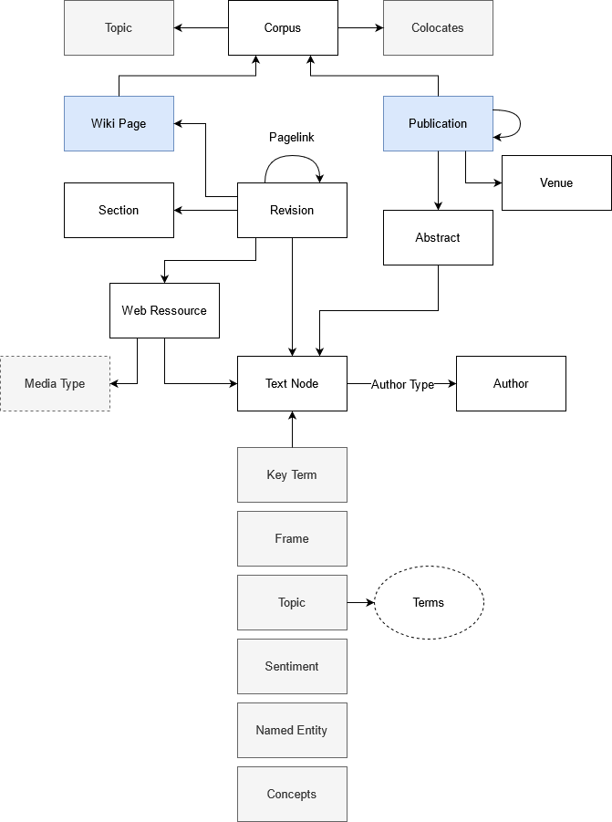
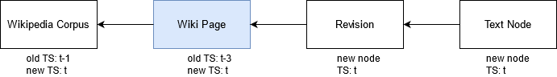

InsightsNet Architecture (Initial Draft)
Contents
InsightsNet Architecture (Initial Draft)#
The central component of InsightsNet is a property graph that links objects of study and annotations stored in ArangoDB. The InsightsNet data model describes the structure of the property graph.
The graph is, both, object of analysis as well as result container. This means that annotation runs evaluate the graph and enrich it with annoations.
In the example below object of study (OOS) nodes are depicted as white boxes and annoation nodes as grey boxes. OOS nodes are created by Graph Builders that read raw corpus data and map it to the InsightsNet graph. Graph builders also create some basic self-evident annotations (e.g. authors, provided keywords). The OOS nodes are analysed by automatic Annotators, which add or update annoations to the graph.

In order to create direct links between annotations Annotation Linkers establish relations between existing annotations like “is identical to”, “belongs to”, etc., see annoation graph.
The enriched InsightsNet graph can be further analysed or queried by Analyzers for producing results to be presented to the end-users.
Handling time and provenance metadata#
Every node and relation in the InsightsNet graph has to carry at least the time when it was created or last updated. This not only enable temporal analyses but makes to graph also revertable to a former state in case of inconsistencies. Furthermore, in case of growing corpora timestamps allow incremental graph updates based on only new corpus entries. Components that enrich the graph, i.e. annotators also store metadata about how an annotation was created (i.e. parameterization of algorithms). Metadata handling in the different components is described specifically in the description of component types.
Subgraph selection#
For many use cases not the full graph is needed for annotation and analysis runs. In order to save computation time components that create annoations or perform other analyses operate only on a subgraph given by a corresponding subgraph query that, for example, restrics the graph to a certain time window or selects specific objects of study. New automatic annotations are only added to nodes in the subgraph where they are missing but never recomputed if not needed, see gradual update rules of annotators.
Components#
Graph Builders#
Graph builder components evaluate raw corpus data and map it to the InsightsNet Graph by creating OOS nodes and corresponding relations.
Input: Raw corpus data
** Output:** Object of study (OOS) nodes, self-evident annotations and relations in ArangoDB (InsighsNet Graph)
Metadata stored in nodes and edges:
Timestamp
Timestamp propagation: If content nodes are added or updated, their timestamp is recursively propagated to parent content nodes. For example, if a new revision (as well as corresponding text) nodes are added, the timestamps of the parent article node as well as the corpus node are updated (see graphic below). Since annoation nodes (see below) also carry timestamps, it can be determined which annotations have to be updated after the graph update.

Annotators#
Annotator components enrich the InsightsNet graph by analysing OOS nodes and link them to newly created annotation nodes. Annotations can be on different levels. For example, corpus level (e.g. corpus statistics, topics), text nodes (e.g. named entities, keyphrases), image nodes (e.g. generated caption), etc.
Input: InsightsNet Knowledge Graph, Subgraph selection query
** Output:** Annotation nodes and relations in ArangoDB (Updated InsightsNet Knowledge Graph)
Metadata stored in annotation nodes and annotated edges:
Timestamp
Component that created the annotation
Parameters used for analysing content nodes
An example for annotation metadata in json format for annotations produced by keyphrase extraction is given below:
{
analysis_component: 'keyphrase_extraction',
parameters: {
algorithm: text_rank,
relevance_threshold: 0.75
}
}
Gradual update rules:
The annotation metadata is used to keep the annoation graph consistent and to avoid unneccessary computations.
An annotation of a OOS node is only computed once. To this end, before an annotator (parameterized by algorithm and settings) analyzes an OOS node, it first checks if there exists already an attached annotation node that has matching parameter settings in its metadata. In this way annotations can be created on demand for specific subgraphs depending on the analysis goal and re-used where possible. The more analysis runs performed, the less likely it is that a OOS node has to be evaluated.
However, since the corpus builder can modify the OOS part of the graph annotations may need to be updated after graph updates. The timestamp propagation mechanism of the graph builder components described above ensures that the timestamp of OOS nodes is updated if it was affected by a graph update. If the timestamp of an annotation is smaller than the timestamp of its attached OOS node, it might be outdated and needs re-computation.
Two options for annotation updates (open issue):
Compute new delete old (Pro: No legacy information, Con: Graph is not fully reversible to a prior state).
Compute new flag old as outdated (Pro: Graph is fully reversible to any prior state, Con: Graph may contain much useless information, e.g. results from trial runs)
Annoation Linkers#
Annotation linkers
Input: InsightsNet Knowledge Graph, Subgraph selection query
Output: Links between annoations in ArangoDB (Updated InsightsNet Knowledge Graph)
Metadata links between annotation:
Timestamp
Timing of
Analyzers#
Analysers are components that produce results that are not stored in the InsightsNet Graph. These can be, for example, visualisations. Some analysers may just read out information from the graph (e.g. corpus topics) and create a representation for the end user. Others can perform analyses based on specific queries (e.g. determining collocates of a given query term).
Input: Updated InsightsNet Knowledge Graph, Subgraph selection query
Output: Analysis results and visualisations
GUI#
Requirements: https://gitlab.dlr.de/insightsnet/data-model/-/tree/main/annotation_graph#purpose-of-a-gui
Open issues:
Parameterisation of annotators and analysers
Subgraph queries
Fixed but parameterizable workflows integrated in UI or user defined composition of workflows based on a selection of annotator -> annotation linker -> analyzer
Presentation of analysis results
Manual annotations